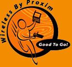

![[ mozilla.org ]](mozilla.gif)
|
mozilla dot party
with your host
Jamie Zawinski
On April 1st, 1998, I threw a little party
to celebrate the release of the Mozilla source code, and to thank all of the
folks who have brought us this far.
It was a blast.
Go here to read a narrative about
the chaos and pathos that goes into putting together an enormous
spectacle like this one at absolutely the last minute.
Or, if you're the impatient type, skip all those pesky words and
go straight to the pictures.
The party got some press coverage, too:
Do you know of more? let me know.
|
|
|
thanks
|
|
- To Random, for giving me a crash course in club promotion;
- To Dan Mosedale
and Doug Dalton,
for coordinating all of our computer hardware needs, talking many
people into lending us expensive equipment for free, and generally going
above and beyond the call of duty;
- To Brian
Behlendorf, for coordinating half of our djs, for djing himself,
and for valuable advice;
- To Spencer Murray and
the souliciousfunkdefied experience of The Kofy Brown Band, for
one hell of a show;
- To all our djs,
Skip,
Sage,
Brian,
Markie,
Caliban,
Fuzzboy,
and
Mr. Meanor,
for excellent music;
- To Tara
Hernandez, for cashing in favors with vice presidents to get
them to spring for the cost of busses to bring Netscape employees to
the party and back again;
- To Marc
Andreessen, for personally footing the bill for busses
to bring the folks who went to see him speak at
SVLUG to the party;
- To Don McCasland,
for hijacking the giant styrofoam Mozilla from the Netscape cafeteria
and transporting it to and from the club; and also for providing a
pair of Quake-ready PCs;
- To
Aimee Cardwell,
Bob Lord,
Dylan Shea, and
David King for helping us set up, break down, transport heavy
objects, make last-minute shopping trips, and various other indignities;
- To Morrisa Sherman,
for last-minute decorations;
- To Netobjects, Inc.,
for donating copies of NetObjects Fusion 2.0 and
NetObjects SiteBuilder for us to give away;
- To Macromedia,
for donating a copy of
Macromedia
Flash 2.0;
- To Digital Equipment
Corporation, for donating a zillion copies of
Alta
Vista Personal Search;
- To Be, Inc., for donating
copies of
BeOS x86,
and some Be t-shirts;
- To Wired Magazine, for
donating baseball caps, t-shirts, and many copies of their
latest issue;
- To Unamerican
Activities, for donating hundreds of foul-mouthed and cynical
stickers;

- To Proxim, for lending us
the hardware for a wireless T1 link to the nightclub, and for coming out
and installing it on the day of the event;
To Hypnovista, for lending
us the internet connectivity at the other end;
To Adam Margulies for
lending us an SGI O2, preloaded with
MBONE
video encoding software;
- To ICAST, for allowing us to
to redistribute their Viewer &
Guide MBONE video software for Windows 95 and NT
(instructions here);
- To RealNetworks,
for lending us a machine preloaded with RealVideo encoding software;
- To Elliot Lee for
running the irc.mozilla.org
IRC server;
- To Michael
Whalen and the staff of Sound Factory, for being incredibly
helpful, organized, and for running one of the nicest, most immaculate
club spaces I've ever seen.
- To Shepard,
Philip, and all the folks at
Black Market, for not only
coming up with a stunning t-shirt design, but also for getting the shirts
printed and shipped to us in record time;
Note: The t-shirts are gone. They were a limited edition of
1000, and there won't be any more. There may be different t-shirts in the
future, but please don't bug the Black Market folks about it.
- To all 3,500 of you who came to the party (and, it would seem,
for tipping like winning gamblers and making the bartenders very,
very happy people);
- And to whomever I've accidentally forgotten. Please don't hate me,
it was a mistake!
Thank you all!
|
|
|
|
|